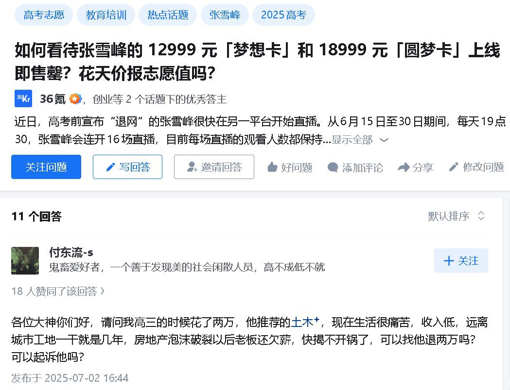

不知道包什么的番茄
@bcfqdtfqz
@gulaozi 首先张雪峰目标用户就不是你口中的清北哈工大和同济，其次一般人进不去央国企也进不去设计院最多到二包三包下面做一线，另外这些央国企基本都只负责提供挂名抽水实际真正自己做的项目比例低，行内有几家资金挪用很厉害的几个二包三包怎么告都告不赢这也不是恒大暴雷以后的事情

GuLaozi
@gulaozi
最近张雪峰老师刚刚去世，发现国外很多中文博主刻意针对他，各种声音都有，在这里我说下我的看法:
1、我本人15年从事土木行业，23年年初被辞退，吃到几年土木的红利，所以，我对图片说的行业也算有一些发言权的。 https://t.co/CuR6UjrkxW